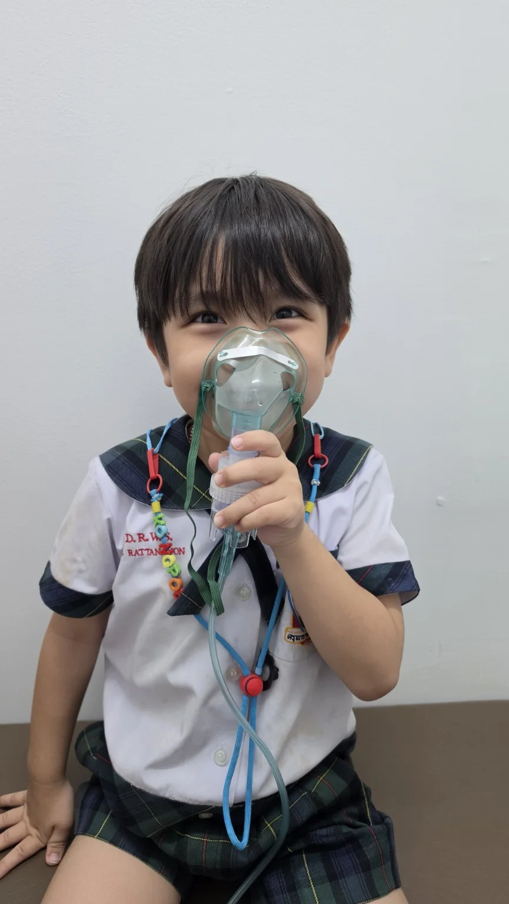

วัคซีนและการป้องกันโรค
ตรวจสอบประวัติวัคซีนและวางแผนวัคซีนตามช่วงอายุและประวัติของเด็กแต่ละคน
คลินิกเด็ก · ราชบุรี
ดูแลอาการเจ็บป่วยทั่วไปในเด็กและวัยรุ่น พร้อมวัคซีน การติดตามสุขภาพ น้ำหนัก ส่วนสูง และคำแนะนำตามช่วงวัย
เมื่อลูกไม่สบาย
อาการเจ็บป่วยในเด็กมีได้ตั้งแต่อาการเล็กน้อย ไปจนถึงอาการที่ควรได้รับการประเมินโดยแพทย์ หากพ่อแม่ไม่แน่ใจ สามารถพาลูกมาตรวจเพื่อประเมินอาการและวางแผนดูแลต่อได้

สุขภาพและวัคซีน
การติดตามสุขภาพเป็นระยะช่วยให้พ่อแม่เห็นทั้งเรื่องวัคซีน น้ำหนัก ส่วนสูง พัฒนาการ การกิน การนอน และเรื่องที่ควรดูแลตามช่วงวัยของลูก
ตรวจสอบประวัติวัคซีนและวางแผนวัคซีนตามช่วงอายุและประวัติของเด็กแต่ละคน
ติดตามน้ำหนัก ส่วนสูง การกิน การนอน พฤติกรรม และสุขภาพตามช่วงวัย เพื่อดูภาพรวมของลูกมากกว่าการรอให้มีอาการป่วย
เรื่องที่พ่อแม่สงสัย
บางเรื่องอาจไม่ใช่อาการป่วยชัดเจน เช่น ลูกกินยาก นอนยาก น้ำหนักขึ้นน้อย หรือพ่อแม่ไม่แน่ใจว่าสิ่งที่สังเกตเห็นเป็นเรื่องปกติตามวัยหรือไม่ สามารถนำมาคุยและประเมินร่วมกันได้เมื่อมารับบริการที่คลินิก
ถ้ากังวลเรื่องความสูง การเติบโต หรือการเข้าสู่วัยรุ่น
ดูการดูแลด้านการเจริญเติบโตและฮอร์โมน →